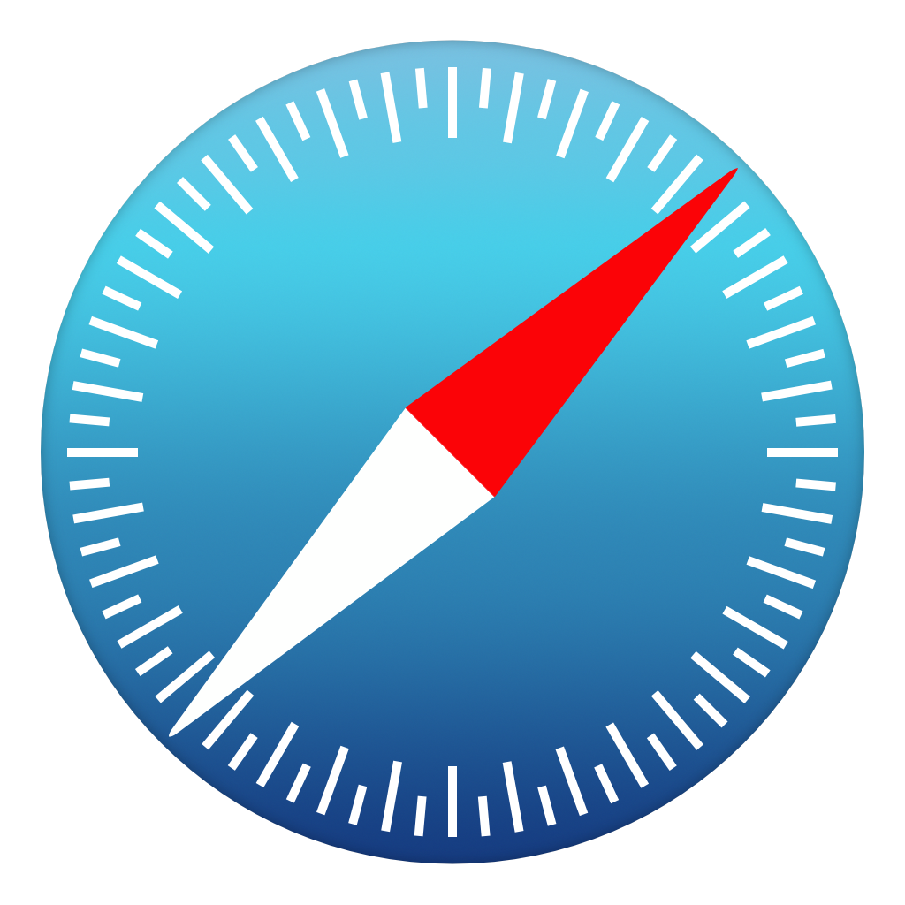
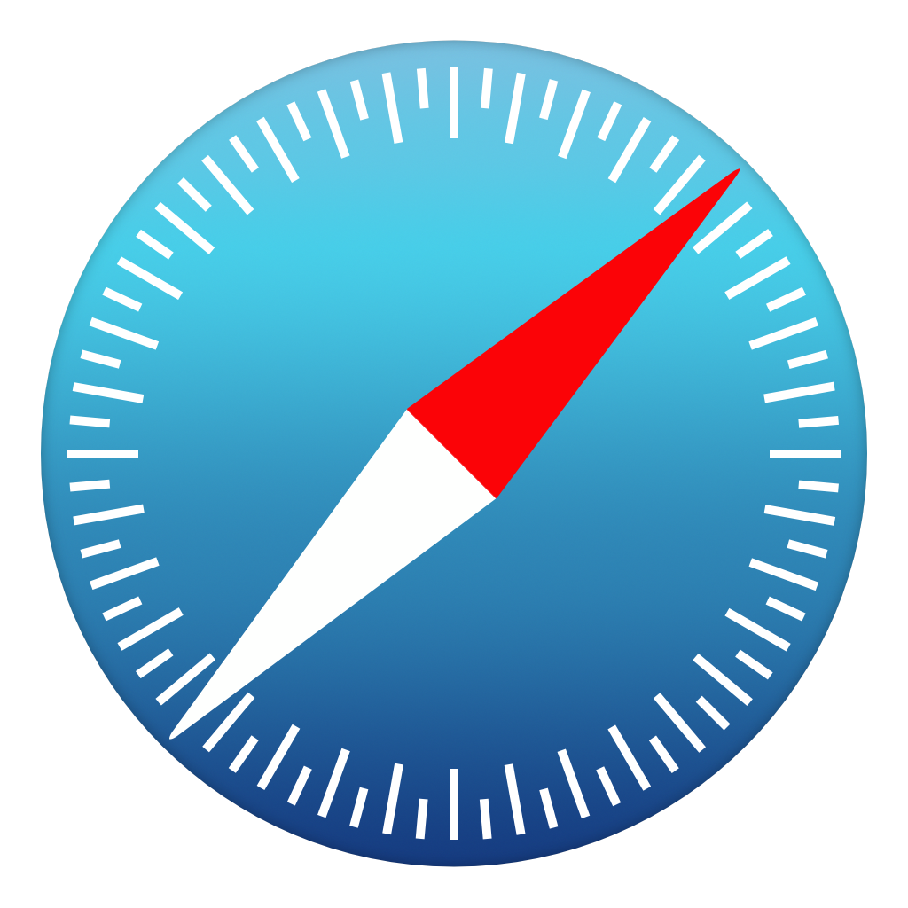

Browser Pop Quiz
Last version check — January 2016:
 |
 | |||
| 48 | 44 | 34 | 10586 | 9.0.1 |
— Corey Butler (@goldglovecb)
— Brian Moeskau (@bmoeskau)
Thanks to our venue sponsor:
Thanks to our food sponsor:
Last version check — January 2016:
|
 | |||
| 48 | 44 | 34 | 10586 | 9.0.1 |
As of February 24, 2016:
|
||||
| 48 | 44 44.0.2 |
34 35 |
10586 | 9.0.1 |
See our notes about Microsoft Edge Versioning.
CSS Writing Modes Level 3 without "webkit" prefix, along with syntax updates to the most recent CR. As part of the work, a non-standard value "horizontal-bt" is removed from -webkit-writing-mode.
Fixing bugs pays off!
| Reward | Bug Number | Status | Issue | Fixed By |
|---|---|---|---|---|
| $25,633.70 | 583431 | CRITICAL | CVE-2016-1629: Same-origin bypass in Blink and Sandbox escape in Chrome. | Anonymous |
| $7,500.00 | 546677 | High | CVE-2016-1622: Same-origin bypass in Extensions. | Anonymous |
| $7,500.00 | 577105 | High | CVE-2016-1623: Same-origin bypass in DOM. | Mariusz Mlynski |
| $TBD | 583607 | High | CVE-2016-1624: Buffer overflow in Brotli. | lukezli |
| $1,000.00 | 509313 | Medium | CVE-2016-1625: Navigation bypass in Chrome Instant. | Jann Horn |
| $41,633.70 | ||||
/* Use the default settings */
font-feature-settings: normal;
/* Set values for OpenType feature tags */
font-feature-settings: "smcp";
font-feature-settings: "smcp" on;
font-feature-settings: "swsh" 2;
font-feature-settings: "smcp", "swsh" 2;
/* Global values */
font-feature-settings: inherit;
font-feature-settings: initial;
font-feature-settings: unset;/* use small-cap alternate glyphs */
.smallcaps { font-feature-settings: "smcp" on; }
/* convert both upper and lowercase to small caps (affects punctuation also) */
.allsmallcaps { font-feature-settings: "c2sc", "smcp"; }
/* enable historical forms */
.hist { font-feature-settings: "hist"; }
/* use the second available swash character */
.swash { font-feature-settings: "swsh" 2; }
/* enable stylistic set 7 */
.fancystyle {
font-family: Gabriola; /* available on Windows 7, and on Mac OS */
font-feature-settings: "ss07";
}<p style="font-family: Asimov;">plain</p>plain
<p class="smallcaps" style="font-family: Asimov;">smallcaps</p>smallcaps
<p class="fancystyle">Fancy Style</p>Fancy Style
A consortium of Chinese buyers bid $1.2B to purchase Opera earlier this month. Opera (OPESF $7.71) is receptive to the idea. A buyout would most likely mean Opera would focus more on mobile. Despite this, they're working on a new desktop browser.
/
#